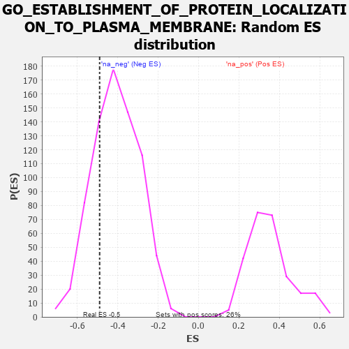

| | | Dataset | 7d |
| Phenotype | NoPhenotypeAvailable |
| Upregulated in class | na_neg |
| GeneSet | GO_ESTABLISHMENT_OF_PROTEIN_LOCALIZATION_TO_PLASMA_MEMBRANE |
| Enrichment Score (ES) | -0.4899824 |
| Normalized Enrichment Score (NES) | -1.1989346 |
| Nominal p-value | 0.24627875 |
| FDR q-value | 0.63782275 |
| FWER p-Value | 1.0 |
Table: GSEA Results Summary
 Fig 1: Enrichment plot: GO_ESTABLISHMENT_OF_PROTEIN_LOCALIZATION_TO_PLASMA_MEMBRANE
Fig 1: Enrichment plot: GO_ESTABLISHMENT_OF_PROTEIN_LOCALIZATION_TO_PLASMA_MEMBRANE
Profile of the Running ES Score & Positions of GeneSet Members on the Rank Ordered List
| PROBE | GENE SYMBOL | GENE_TITLE | RANK IN GENE LIST | RANK METRIC SCORE | RUNNING ES | CORE ENRICHMENT | | 1 | NSF | | | 243 | 0.947 | 0.0760 | No |
| 2 | CNST | | | 317 | 0.792 | 0.1559 | No |
| 3 | RAB10 | | | 2952 | 0.157 | -0.1576 | No |
| 4 | RAB8A | | | 3319 | 0.102 | -0.1921 | No |
| 5 | GGA1 | | | 3952 | 0.002 | -0.2713 | No |
| 6 | VPS35 | | | 3989 | -0.006 | -0.2752 | No |
| 7 | SYS1 | | | 4038 | -0.014 | -0.2796 | No |
| 8 | GRIP2 | | | 4372 | -0.071 | -0.3135 | No |
| 9 | VAMP7 | | | 5777 | -0.399 | -0.4451 | Yes |
| 10 | ARL6 | | | 5847 | -0.417 | -0.4069 | Yes |
| 11 | VAMP3 | | | 6043 | -0.487 | -0.3766 | Yes |
| 12 | GOPC | | | 6167 | -0.528 | -0.3327 | Yes |
| 13 | BBS2 | | | 6383 | -0.608 | -0.2913 | Yes |
| 14 | BBS1 | | | 6397 | -0.616 | -0.2237 | Yes |
| 15 | CSK | | | 6428 | -0.630 | -0.1565 | Yes |
| 16 | VAMP2 | | | 6525 | -0.672 | -0.0929 | Yes |
| 17 | CLN3 | | | 6580 | -0.699 | -0.0210 | Yes |
| 18 | ANK3 | | | 7690 | -1.740 | 0.0353 | Yes |
Table: GSEA details [plain text format]

Fig 2: GO_ESTABLISHMENT_OF_PROTEIN_LOCALIZATION_TO_PLASMA_MEMBRANE: Random ES distribution
Gene set null distribution of ES for GO_ESTABLISHMENT_OF_PROTEIN_LOCALIZATION_TO_PLASMA_MEMBRANE